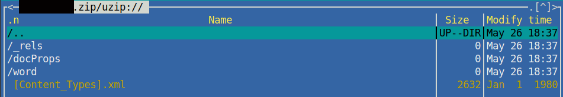

Entre logiques identitaires et traces intimes en contexte numérique
![]()
Introduction
Ce texte est rédigé dans le cadre d’un examen doctoral dénommé « examen de synthèse » à l’Université de Montréal. Il fait suite à un premier texte que l’on peut retrouver en ligne ici. La temporalité de cet examen étalée sur environ un mois le configure comme un espace de dialogue. Ce dialogue n’a pas été initié par le texte que je viens de mentionner mais par le cadre qu’est l’examen, il y ouvre un espace qui prend forme à travers des textes. Un chronomètre formel est lancé le lundi 15 mai 2023 à 12h00 (fuseau horaire de Toronto) suite à l’envoi du premier texte mentionné ci-dessus. Précisément une semaine plus tard, en réponse au texte que j’ai envoyé, je reçois cette question :
Puisque votre projet entend étudier les traces de l’intime, comment penser l’intime dans les logiques identitaires (Ertzscheid) en contexte numérique ? La réponse pourrait définir ce qu’on entend par « traces intimes » (p. 14) à partir d’un exemple tiré du corpus à l’étude.
Dès lors, j’ai exactement une semaine de plus pour y répondre, ce qui nous amènera au lundi 29 mai 2023 à 12h00.
Dans le texte précédent, je présentais ma recherche sur la construction de l’intimité du chercheur et évoquais deux types de traces : les traces intimes et les traces de l’intime. De prime abord l’emploi de ces deux notions pourrait désigner le même objet, c’est-à-dire des traces à propos d’une intimité, chose un peu vague et qui participe largement à créer un voile de confusion sur la tentative de les définir explicitement. D’une certaine manière cette désignation générale n’est pas fausse : les traces intimes et les traces de l’intime relatent d’une certaine intimité. Pourtant, l’emploi de la préposition « de » introduit l’intime comme un complément de la trace et la dissocie de son homologue (la trace intime) en y ajoutant une distance que l’on retrouve également entre l’intime en train de se construire et l’indice d’une intimité présent dans un espace public. La distinction faite entre ces deux traces permet de faire correspondre respectivement la trace intime à l’indice de construction de l’intimité et la trace de l’intime à l’indice d’une intimité supposée, observée depuis l’espace public.
Cette distinction faite, il convient de faire le rapprochement avec les logiques identitaires susmentionnées. Celles-ci sont pensées exclusivement dans le cadre du numérique et ne concernent pas directement la notion d’identité telle qu’elle pourrait être traitée en philosophie sur la prise de conscience de soi et de l’autre. Dès lors, nous parlerons d’identité numérique et, selon Olivier Ertzscheid dans son ouvrage de 2013 :
L’identité numérique est constituée de la somme des traces numériques se rapportant à un individu ou à une collectivité : des traces « profilaires » correspondant à ce que je dis de moi (qui suis-je ?) ; des traces « navigationnelles » qui renseignent sur les sites que je fréquente et sur lesquels je commente ou j’achète (comment je me comporte) ; enfin des traces inscriptibles et déclaratives – ce que je publie sur mon blog par exemple – qui reflètent directement mes idées et mes opinions (ce que je pense). De manière plus circonstanciée, l’identité numérique peut être définie comme la collection des traces (écrits, contenus audios ou vidéos, messages sur des forums, identifiants de connexion, etc.) que nous laissons derrière nous, consciemment ou inconsciemment, au fil de nos navigations sur le réseau et le reflet de cet ensemble de traces, tel qu’il apparaît « remixé » par les moteurs de recherche.
Nous observons des similitudes entre les traces qui définissent l’identité numérique dans cette citation et notre tentative de définir les traces de l’intime. Toutefois, et c’est là l’hypothèse soutenue, l’identité numérique se retrouve bornée par l’ensemble des traces récoltées et par des processus de traçage, alors que dans le cas de l’intime les traces permettent d’en apercevoir la forme mais pas de le saisir. L’identité numérique est une notion totalement objectivée par un ensemble de traces quantifiables – toujours en évolution ceci dit. De cette manière, l’identité numérique n’a rien à voir avec la notion d’identité qui elle se rapproche dans sa non-forme de la notion de l’intime. Comme nous l’avons vu dans le texte précédent, l’intime est définissable à travers des medias, mais lui-même échappe à toute forme tangible. De fait, l’intime et l’identité numérique peuvent se croiser à certains égards mais restent distincts l’un de l’autre.
La logique identitaire sous-jacente à la définition de l’identité numérique est une logique de traçage de l’individu, or il n’est pas question de transposer ce mode de surveillance à l’intimité d’un chercheur. Afin d’expliquer ce choix, une première partie de cette réponse sera consacrée aux logiques identitaires en contexte numérique. Pour y répondre, nous nous appuierons largement sur les travaux d’Olivier Ertzscheid et plus particulièrement sur son ouvrage intitulé Qu’est-ce que l’identité numérique ? ainsi que sur ceux de Gustavo Gomez-Mejia, notamment son livre Les fabriques de soi publié en 2016.
Une seconde partie sera quant à elle dédiée à approfondir notre réflexion sur les logiques identitaires, notamment pour montrer que les identités numériques ne sont pas seulement le produit des comportements des utilisateurs mais aussi et surtout de processus d’industrialisation. Cette partie des logiques identitaires sera également applicable aux traces de l’intime. Ainsi les identités numériques et les intimes seraient produits en séries, selon des standards imposés aux utilisateurs sous couvert de personnalisation (ce qui n’est pas sans rappeler le fordisme). La notion pivot de cette démonstration sera celle d’architexte développée par Yves Jeanneret et Emmanuël Souchier (2019).
Enfin, on s’attachera dans une dernière partie à dire ce que ne sont pas les traces intimes à partir des logiques identitaires. Les traces collectées et agglomérées pour former une identité numérique sont des traces déjà publiées donc déjà écrites. Il s’agit là de ce que nous définissons comme les traces de l’intime. Or c’est par les traces intimes que nous souhaitons étudier la construction de l’intime. Ces traces existent déjà, seulement elles ont été oubliées, ou peut-être volontairement laissées de côté des logiques identitaires. Nous nous appuierons sur des exemples concrets pour argumenter ce propos.
Les logiques identitaires en contexte numérique
Apparition de la notion d’identité numérique et enjeux initiaux.
L’apparition de la notion d’identité numérique est liée, dès sa naissance, à la question de la surveillance et du contrôle. Jusque vers le milieu des années 1990, l’identité numérique est d’abord une question d’« identifiants numériques ». Une des questions centrales pour le gouvernement français à cette époque est celle de la création d’un identifiant unique qui autoriserait l’interconnexion des différents fichiers administratifs relatifs à une personne (par exemple : les données de Pôle Emploi pourraient être mises en connexion avec celle de la Sécurité Sociale, de l’Éducation nationale, etc.). Cette interconnexion pouvait aboutir à l’existence d’un numéro unique. Le projet a été refusé.
À ce moment, la question de la sécurisation des données concerne principalement les entreprises et les administrations et n’est pas une question dans l’opinion publique.
De la fin des années 1990 au début des années 2000, commence à apparaître la problématique de la vie privée tandis que les grands acteurs d’Internet et du Web (France Télécom, Cisco, Sun, eBay) réfléchissent à des normes mondiales pour la gestion des données personnelles et les procédures d’authentification. À partir de 2003, on assiste au lancement des grands réseaux sociaux, dont MySpace, Friendster et LinkedIn. Dans le même temps, Google est devenu l’outil incontournable que nous connaissons aujourd’hui. Dès 2005, la question de la protection des données apparaît. À ce propos, Shoshana Zuboff explique bien ce phénomène au tournant du crash de l’an 2000 dans son ouvrage (très controversé) sur le capitalisme de surveillance (Zuboff, 2020). Pour résumer, suite aux investissements massifs dans les développements des technologies informatiques de la Silicon Valley aux États‑Unis, les entreprises (dont Google) ont dû devenir rentable. Par conséquent, elles ont développé un modèle économique basé sur les comportements des utilisateurs en ligne que nous connaissons. Dès 2005, l’usage des réseaux sociaux est déjà banalisé et massifié.
On le voit bien, l’enjeu de la surveillance est central dans la question de l’identité numérique. Néanmoins, avec les évolutions récentes d’Internet et du Web, la question de la surveillance ne se pose pas de la même manière qu’avant son apparition. Dans un article intitulé « Le contrôle social à l’heure des technologies de mobilité et de connectivité : du fichage ciblé des individus au traçage continu des agissements », Dominique Carré et Robert Panico (2011) expliquent cette transition. Avant l’apparition d’Internet, la question du contrôle des individus se posait surtout à propos du fichage faits par les États.
Avec l’apparition d’Internet, la menace pour les libertés individuelles et collectives ne se pose plus uniquement du côté du fichage mais aussi du côté des traces numériques qui sont produites par l’utilisation personnalisée d’Internet quand nous achetons en ligne un billet de train, quand nous nous inscrivons sur un réseau social ou, tout simplement, quand nous faisons une recherche sur Google. La personnalisation de notre navigation en ligne est nécessaire à notre utilisation du Web pour nous protéger de la fraude mais elle est aussi très intrusive.
Avec l’arrivée de l’Internet grand public, un autre mode de surveillance est apparu. Les traces que nous produisons au quotidien sont récupérées par les sites Web en question et permettent de reconstituer qui nous sommes, nos goûts, nos valeurs, notre emploi du temps, etc.
Ainsi, selon Dominique Carré et Robert Panico, nous sommes passés du fichage au traçage où chacune des traces que nous laissons sur le Web peut être récupérée pour reconstruire un « double numérique » de nous-mêmes.
À chaque requête déposée, à chaque statut renseigné, à chaque inscription sur notre mur, nous offrons progressivement aux moteurs et aux réseaux sociaux – le plus souvent sans le souhaiter ou le savoir – une véritable mine d’informations sur nous-mêmes et sur nos pratiques. Cela induit un changement dans le rapport à la sensation de contrôle : nous n’avons pas de sensation de contrôle, bien que nous laissions derrière nous une quantité d’éléments qui donnent des indications sur nous et qui construisent une identité numérique. Pour les deux auteurs, il y a un changement de représentation dans la logique de surveillance.
Définition de l’identité numérique
Afin de compléter la définition de l’identité numérique amorcée en introduction, nous pouvons y ajouter celle qui nous est proposée par Dominique Cardon (2019) :
L’identité numérique est un processus collectif : les participants montrent d’eux des signes que les autres approuvent plutôt que des signes qui ne retiennent pas leur attention. Leur identité est produite par le réseau social d’amis qu’ils ont choisi, par leur utilisation de telle ou telle plateforme, par le fait qu’ils s’exposent aux commentaires et aux likes de personnes qui, elles-mêmes, exposent et privilégient tel ou tel trait de leur propre identité. Bref, leur identité numérique n’appartient pas totalement aux individus. Elle est la conséquence de l’espace social dans lequel ils interagissent.
À partir de cette brève approche historique, et de la définition énoncée en introduction, nous pouvons proposer une définition plus large de l’identité numérique.
Autrement dit, mon identité numérique c’est un ensemble de traces : adresse IP, cookies, adresses courriels, nom, prénom, pseudos, coordonnées (personnelles, administrative, bancaires, professionnelles, sociales), photos, avatars, logos, tags, liens, vidéos, articles, commentaires de forums, données géolocalisées, etc., mais aussi un ensemble d’interactions sociales.
Chaque trace est la production d’un document dans un espace déterminé : une photo de nos vacances, un commentaire, un mail… et notre identité numérique est ce que ces productions documentaires disent de nous une fois captées et mises ensemble.
Ces traces que l’on appelle aussi données personnelles disent beaucoup de nous. Déclarée de cette manière, l’identité numérique est une production des écritures numériques au même titre que l’intime tel qu’énoncé dans mon hypothèse.
Lorsque Cardon introduit le fait que « [l’]identité numérique n’appartient pas aux individus », il ouvre la perspective que l’individu n’en est pas propriétaire du tout. Si l’identité numérique n’est qu’une production du traçage de l’individu, les traces produites, et donc un partie de l’identité produite appartient aux plateformes sur lesquelles il interagit. C’est-à-dire que ce n’est pas tant les autres acteurs qui participent à produire l’identité numérique de par leurs réactions, mais la forme des réactions possibles que la plateforme permet qui détermine la forme de l’identité numérique. C’est parce que Facebook a intégré le système des mentions « j’aime » que les autres personnes que moi peuvent signifier s’ils apprécient ou non un contenu que je publie. Étant donné que « l’identité numérique est produite par le réseau social », et que les traces (données personnelles) sont la propriété dudit réseau social, nous pouvons en déduire que l’identité en tant que produit appartient également à cette même entreprise. Nous avons d’un côté un utilisateur qui adopte certains comportements, opère des choix et produit des écritures, et de l’autre des plateformes qui conditionnent (impose une forme) les écritures des utilisateurs. Ce complément à notre définition initiale permet d’introduire les processus de co-construction et d’industrialisation de l’identité numérique que nous aborderons dans la deuxième partie. Avant cela, il nous reste un dernier point à développer pour terminer de définir les logiques identitaires en contexte numérique.
L’assujettissement à des processus d’identification
La question des traces et des données personnelles est accentuée par un phénomène, celui des identifiants et de l’identification. Aujourd’hui, notre utilisation du Web est majoritairement soumise à l’ouverture de comptes et à des processus d’identification. Un identifiant, c’est un couple associant un nom d’utilisateur et un mot de passe, et permettant d’accéder à des services en ligne. Leur nombre est impressionnant. Par exemple, si je fais la liste de tous les sites sur lesquels j’ai dû m’identifier depuis ce matin (en seulement quelques heures) :
- Ma boîte mails personnelle ;
- Mes boîtes mails professionnelles (Université Paris Nanterre, Université de Montréal) ;
- Messagerie professionnelle (via GitHub) ;
- Hedgedoc pour préparer une réunion (via GitHub) ;
- Facebook ;
- Youtube ;
- Spotify ;
- Twitter ;
- Mastodon ;
- WhatsApp ;
- Cairn.info ;
- GitHub ;
- Stylo (via Huma-Num).
Tous ces sites Web demandaient une identification avant tout usage. L’identification et la traçabilité de l’usager sont défendues par la plupart des sociétés du Web comme le seul moyen d’offrir une expérience enrichie de navigation, la seule possibilité permettant de personnaliser le service rendu. Mais ils ont aussi pour conséquence de documenter, de manière beaucoup plus transparente, nos identités numériques.
En effet, avec un identifiant : on identifie les pratiques des individus sur le Web, on sait que c’est X ou Y qui utilise ce site.
Aujourd’hui, de plus en plus de services et d’acteurs du Web ont choisi de simplifier la tâche de leurs utilisateurs en adhérant à un système d’identifiant unique (une paire unique “nom d’utilisateur + mot de passe”) qui permet d’accéder à un nombre conséquent de services.
En apparence, ce fonctionnement est très pratique mais il se mue souvent en un cercle vicieux, car le système a alors l’autorisation d’accéder à mes ressources (documents, courriels, amis, etc.). L’identification est persistante et souvent transparente, comme par exemple cela est le cas avec les services de l’entreprise Google, que l’on peut considérer comme un service total.
Les traces sont construites
Dans la fabrique des traces et dans la construction de l’identité numérique, un des éléments fondamentaux est l’identifiant.
Nous allons voir que la logique de l’identifiant n’est pas nouvelle, elle est inscrite dans une histoire longue, une histoire sociale et administrative qui transforme les individus en chiffres pour mieux gérer les populations.
La notion d’identifiant est liée à une histoire sociale des gouvernements et de la surveillance. Historiquement, les premiers recensements de la population transforment les individus en chiffres afin de pouvoir récolter les impôts et repérer les individus pour pouvoir lever des troupes.
Dans l’armée, jusqu’à la fin du service militaire obligatoire (1996 annonce de Chirac, fin effective en 2001), on attribuait à chaque conscrit un numéro de matricule, qui correspondait au numéro de la page du registre tenu par l’armée, un “feuillet nominatif” était ouvert pour chaque soldat puis, tenu à jour jusqu’à la date de la libération des obligations (radiation des armées).
Sur ce feuillet nominatif figuraient les informations sur l’état civil du conscrit :
- noms, prénoms, voire surnoms ;
- date, lieu et département de naissance ;
- lieu de résidence au moment de l’enregistrement pour le service militaire ;
- noms et lieu de résidence des parents ;
- détails physiques ;
- niveau d’instruction ;
- profession : au moment de la conscription, puis lors des différentes actualisations de la fiche matricule.
Figuraient également le “parcours du combattant”, c’est-à-dire :
- les batailles auxquelles le soldat a participé ;
- ses affectations dans les corps de l’armée ;
- ses différents lieux de résidences.
Ou encore ses blessures, ses médailles, remarques sur le comportement et exemplarité de l’individu, etc.
En somme, le feuillet nominatif est une carte d’identité militaire de l’individu. Cette carte d’identité militaire est organisée en plusieurs parties : une première identification sur l’état civil puis deux parties plus spécifiques aux informations militaires.
Lorsque l’on crée un compte sur un site Web, c’est la même chose qui se passe. Prenons l’exemple de Facebook et regardons ce qu’il se passe quand on cherche à s’inscrire sur ce réseau social.
Pour s’inscrire sur Facebook, nous avons affaire à un petit dispositif d’inscription qui ressemble fort à un formulaire administratif : on nous demande de renseigner des informations :
- notre prénom et nom de famille ;
- notre numéro de mobile et email ;
- notre nouveau mot de passe, notre date de naissance ;
- et de cocher la case relative à notre genre (très binaire) Femme ou Homme.
On retrouve donc une forme d’état civil, mais un état civil restreint à la sauce Facebook.
Une fois que ce profil est créé, un numéro identifiant est associé aux informations que j’ai donné, une page (comme le feuillet nominatif du militaire) est créée. La création d’un numéro identifiant est un processus central car c’est lui qui établit un lien entre un sujet et une page Web (qu’il s’agisse d’un compte Instagram ou d’un compte sur un site Web de vente en ligne). Cette page fictive est inscrite et stockée dans une base de données.
Autrement dit, lorsque l’on crée un profil sur Facebook ou sur une autre application, on crée une nouvelle entrée dans la base de données concernée. Pour retrouver les informations qui nous sont relatives, c’est-à-dire pour nous identifier, le site Web en question nous attribue un identifiant qui lui donnera accès à nos informations personnelles afin de les afficher sur notre écran.
Une transformation ontologique de l’individu en chiffre
Nous avons vu que la création d’un identifiant est fortement liée au secteur administratif. Notre identité est assimilée à une page numérotée : le sujet est numérisé, il est transformé en chiffre.
En dehors d’Internet, nous avons aussi une existence sous forme de chiffres. La numérisation du monde n’est pas un phénomène lié à l’apparition du numérique, il existe depuis plus de deux millénaires (cf. conférence de Luca Paltrinieri). Pour ce qui de l’individu, l’administration française nous connaît par nos noms, prénoms, mais également :
- la sécurité sociale nous connaît par notre numéro de sécurité sociale. Sur la carte de la sécurité sociale, chaque chiffre correspond à une information :
- sexe ;
- année de naissance ;
- mois de naissance ;
- département de naissance ;
- code de commune INSEE ;
- numéro d’ordre de naissance : ordre d’enregistrement de votre naissance sur votre commune dans le mois ;
Cet exemple montre qu’on a là une autre manière de nous définir par des chiffres (en fonction de notre lieu et date de naissance). Cela induit un certain formatage de l’identité, qui se voit bien par rapport à la question du sexe par exemple (les choses sont-elles aussi binaire que homme ou femme ?).
- l’Éducation nationale nous connaît grâce à notre numéro INE : un numéro national délivré à chaque élève dès son inscription en petite section de maternelle en France et sera la même jusqu’à Terminale voire dans les cycles d’études supérieures. Il permet d’identifier individuellement chaque élève scolarisé dans l’enseignement élémentaire et secondaire ;
- les impôts nous connaissent avec notre numéro fiscal ;
- autre exemple numérique : les applications du gouvernement passent par un système d’authentification (France Connect et France Connect+). D’ailleurs il est assez ironique que la dernière étape de création d’une identité numérique pour l’authentification France Connect+ (c’est la dénomination officielle) soit une vérification humaine réalisée dans un guichet.
Cette mise en chiffre a une conséquence philosophique : la transformation en nombre transforme les individus entiers, complexes… en chiffres. Sur Internet, cette transformation ontologique instaure un ordre identitaire qui rend systématiquement comparables les espaces prétendus uniques accordés aux uns et aux autres.
Sur le Web, les procédures d’identification sont essentielles car ce sont elles qui, en transformant un individu en nombre, permettent de centraliser les traces qui sont produites par l’utilisation d’Internet. Par exemple sur Facebook, elles permettent d’associer un individu à une série d’informations, de photos, de commentaires, de réactions, de discussions… Et donc elle facilitent la reconstitution d’un profil par les traces produites.
En somme, la nature très personnelle d’un profil Facebook, d’une chaîne YouTube ou d’une timeline sont construites, paradoxalement, sur des numéros génériques au fondement impersonnel.
Pour conclure cette première partie, nous avons vu que la logique identitaire en contexte numérique est une logique de traçage des individus dont le produit est une identité numérique composée de la numérisation de l’individu en identifiant autour duquel s’agglomèrent les traces générées sur le Web. Maintenant, nous allons aborder le deuxième point qui concerne les processus de fabrication des traces.
La co-construction des traces
La co-construction des traces abordée dans cette deuxième partie est a priori valable quel que soit le type de traces générées dans un contexte numérique.
Les traces sont construites selon une logique de gabarit
Le point de départ de l’analyse, c’est de dire que nous écrivons tous dans les mêmes formes standardisées que nous personalisons.
Marie Despret-Lonnet explique dès 2009 que le Web contemporain est fabriqué à partir de gabarits (Després-Lonnet, 2009). Dans le langage courant, un gabarit est un « modèle reproduisant en dimension réelle les contours des pièces plus complexes de la charpente d’un navire et servant à les vérifier durant leur exécution » (cf. CNTRL). Dans l’usage qu’en fait Marie Despres-Lonnet, un gabarit est une écriture en amont du texte.
Il faut tout d’abord se rappeler que le numérique est géré par du langage machine. Le code est un langage et un texte qui a pour objectif de détailler formellement le déroulement d’un programme informatique. À chaque page Web correspond du code : le navigateur ne fait que “peindre” la page en fonction des instructions données (par le code).
Exemple d’une page Web : un clic droit sur une page permet d’afficher le code source, on voit donc bien ici que ce qui apparaît à l’écran est le résultat de l’interprétation d’un langage par le navigateur. Donc si la page change, il y a nécessairement une partie du code qui change.
Autre exemple : Les outils de développement d’un navigateur Web (F12, ou CTRL + shift + I) font apparaître une forme de code sur laquelle je peux agir (CSS et HTML), si je supprime un élément, cela supprime un bout de la page. Donc, lorsque l’on écrit sur le Web, la page de code est modifiée et ce qui apparaît à l’écran est également modifié. À chaque fois que vous ouvrez Facebook, le serveur de Facebook (qui a d’un côté, un modèle de page, et de l’autre la liste des “contenus”, c’est-à-dire les commentaires, les statuts, etc.) va générer le code d’une nouvelle page, en remplissant le modèle avec les informations qui font sens (avec mes commentaires, pas ceux des inconnus), et renvoyer ce code qui sera peint par le navigateur. Il y a donc du code (celui du serveur) qui génère du code (celui de la page). Donc le code du serveur ne change pas (la méthode pour fabriquer la page est la même, seules les données qui sont remplies dans le modèle changent), mais le code de la page elle-même change.
Ainsi, il faut faire la différence entre l’objet éditorial, la forme pré-construite du profil et le texte que les utilisateurs sont invités à produire pour remplir cette forme qui resterait, sinon, une coquille vide. Nous avons donc bien un double niveau dans l’organisation du texte à l’écran : un gabarit, une forme (au niveau éditorial) et du contenu (au niveau de l’utilisateur). Les résultats des requêtes sont insérés dans des gabarits pré-formatés, pour être affichés à l’écran. Il y a là une forme d’industrialisation de la production des pages qui mène à un affichage indifférencié, quelles que soient les particularités des éléments qui les composent.
L’architexte et son pouvoir éditorial
Pour comprendre les enjeux de cette organisation, Emmanuël Souchier et Yves Jeanneret ont proposé le terme d’architexte. Ce terme permet de souligner la différence entre :
- les gabarits proposés par les logiciels permettant d’écrire ;
- le texte que l’on inscrit quand on écrit à l’ordinateur.
Emmanuël Souchier et Yves Jeanneret partent du constat que, pour écrire un texte à l’écran, nous avons besoin d’un logiciel spécifique dédié à cette activité. Pour simplifier, prenons le cas du traitement de texte, bien que cela soit applicable à toute forme d’écriture numérique en général.
Sans ce logiciel (de traitement de texte), je ne peux rien faire : on n’écrit pas directement en langage machine, mais on écrit dans des logiciels qui sont prévus pour qu’on puisse y écrire, et qui sont ensuite chargés d’inscrire dans la matière numérique ce que l’utilisateur souhaite y inscrire. Mais, si cet outil me permet d’écrire sur un écran, il m’impose également ses normes, ses modalités de fonctionnement et les représentations de l’activité d’écriture qu’il véhicule.
Par exemple, si j’ouvre un document au format .docx avec le logiciel Microsoft Word, celui-ci me propose des modèles de documents prédéfinis, pré-formatés. Le premier modèle par défaut est pourtant nommé document vierge (selon les mots de Word). Mais en fait, si je sélectionne ce modèle, il y aura tout un formatage qui sera prévu en amont. Par défaut, le document propose un texte de police d’écriture Calibri, avec des marges de 2.5cm, un interligne pré-calibré, etc. En ce sens, la “page blanche” n’existe pas sur Word : elle est toujours déjà définie dans ses cadres et paramètres par les choix des concepteurs du logiciel Microsoft Word. D’ailleurs la notion même de page est une aberration car elle n’existe pas dans l’espace numérique. Il s’agit d’une transposition de la feuille papier pour générer un environnement familier mais cette page que Word affiche ne correspond même pas au document que j’imprime (il faut a minima passer par un format .pdf prévu à cet effet pour obtenir une ressemblance entre les deux artefacts numérique et papier).
Les architextes sont l’écriture qui organise notre écriture à l’écran, et nous en sommes dépendants.
Il y a un rapport de force qui s’établit entre le créateur du logiciel Word ou d’une plateforme de réseaux sociaux et leurs utilisateurs. Lorsque Microsoft propose une version actualisée de Word en changeant la police par défaut ou en changeant l’organisation des menus, Microsoft change les manières d’écrire de milliards d’individus à travers le monde. C’est la même chose lorsque Facebook, Twitter ou Instagram font une mise à jour de leur architexte en changeant la forme du profil, en modifiant les paramètres d’affichage sur le fil d’actualité.
Donc, les choix éditoriaux des concepteurs, quelles que soient leurs intentions, pèsent sur la production textuelle ordinaire des usagers. Ainsi, les architextes doivent être considérés comme des partenaires éditoriaux, rentrant de plein pied dans nos pratiques d’écritures quotidiennes.
Sur les réseaux sociaux, comme pour les autres outils d’écriture, les éditeurs d’architextes sont ceux qui fournissent les gabarits pour écrire sur l’écran. Donc, notre expression dépend aussi de l’architexte : il y a donc une co-construction de l’écriture, phénomène défini par Souchier et Jeanneret en tant qu’énonciation éditoriale (Souchier, 2019; Souchier, 1998). Au niveau des réseaux sociaux, son écriture (et donc son identité numérique) sont toujours mises en scènes par des acteurs industriels. Nous assistons donc à un formatage de l’écriture sur le Web.
Autrement dit, nous écrivons toujours grâce aux architextes et dans les architextes. Comme ces architextes sont les mêmes pour tous, il y a une grande standardisation de l’écriture sur le Web. L’architexte incarne en définitive un modèle épistémologique particulier pour écrire. Il sert d’intermédiaire entre ce que l’utilisateur souhaite écrire et ce que la machine écrit, en y ajoutant au passage ses propres écrits.
Le pré-formatage des profils réduit l’individu à une série de rubriques
Maintenant que l’on a compris cette logique de co-construction, il faut comprendre comment ça se passe sur les interfaces des logiciels : quelle forme prend cette co-construction à l’écran ? Quelles conséquences pour la mise en scène des traces ?
Jack Goody est un anthropologue britannique qui a travaillé (entre autres) sur l’écriture dans les années 1950 et 1960. Il remarque que le mode d’acquisition d’un savoir (oral ou écrit) conditionne la nature de ce savoir, la façon dont il est organisé. Il en tire donc la thèse suivante : plus qu’un simple véhicule de la pensée, l’écriture est un outil de transformation des connaissances et des sociétés humaines.
Dans son livre La Raison graphique, la domestication de la pensée sauvage (Goody, 1979), il émet l’idée que l’écriture est un « dispositif spatial de triage de l’information » : l’écriture permet d’organiser visuellement la pensée parce qu’elle offre des représentations graphiques de la pensée, comme la liste, le tableau, le diagramme, le glossaire, etc.
Chaque forme écrite à des effets sur les modes de pensée. Pour Goody, le tableau à double entrée permet d’organiser graphiquement le monde de manière systématique et méthodique. Le tableau est une « formalisation toujours plus poussée de la compréhension du monde et de la mémoire du monde ». Autrement dit, un tableau a une spécificité, celle de prétendre représenter et organiser une totalité.
Appliquée à la représentation de soi, la logique du tableau organise donc la mise en scène de l’identité selon une logique systématique et méthodique, comme si l’on pouvait saisir la complexité d’un individu de manière organisée et fonctionnelle, en un seul regard.
La forme du tableau n’est pas anodine car elle standardise les formes au sein desquelles on écrit. Les mises en scène de l’identité sur le Web sont confrontées à la discipline d’un quadrillage, de cases blanches qu’il ne reste qu’à remplir. Cette opération de “mise en tableau” des identités implique une mise en conformité des identités.
C’est une forme prédominante de représentation de l’identité numérique tout autant que de représentation de l’intime dans un espace numérique (notamment le Web).
Comment cela se passe sur Facebook ?
Il y a trois espaces sur Facebook :
- Un en-tête ;
- La colonne de gauche : où l’individu fait son autoportrait en remplissant des descriptions préfabriquées ;
- La colonne de droite, le “journal” où il se raconte et se met en scène selon un récit chronologique.
Comment cela se passe sur la plateforme Books d’OpenEdition (voir par exemple le livre d’Olivier Ertzsheid) ?
Il y a cinq espaces sur OpenBooks :
- une en-tête de la plateforme ;
- une deuxième en-tête en dessous de la première dédiée à OpenEdition Press ;
- une colonne à gauche contenant les métadonnées du livre ;
- une colonne centrale contenant principalement le texte du livre et quelques métadonnées ;
- une colonne à droite contenant :
- les modes de lecture accessible ;
- des métadonnées comme les mot-clés ;
- les notes (de bas de page) du texte.
En somme, le texte se retrouve au centre de l’écran et les éléments qui gravitent autour sont des données dont l’objectif est de contextualiser l’élément central.
Les informations présentées sont des standards dans un cas comme dans l’autre. Du côté du réseaux social, nous retrouvons toutes les informations qui dressent un portrait administratif conventionnel de l’individu. Parmi ces informations nous retrouvons le nom, le prénom, la date de naissance, etc. Il en va de même du côté du livre, les informations présentes sont celles que les utilisateurs ont l’habitude de trouver. Cet ensemble d’informations mis en scène forme un tout que l’on peut identifier comme un objet complet puisque les informations attendues (certainement un biais culturel) sont présentes.
Une deuxième manoeuvre de standardisation est à l’oeuvre dans ces exemples : quel que soit le livre ou le profil, les tableaux choisis pour structurer la présentation des informations restent les mêmes pour tous les objets sur leur plateforme. On observe ainsi à la fois une co-construction des écritures mais aussi une industrialisation du fait de la répétition en série des mêmes actions de représentation des informations.
L’assujetissement à l’architexte
En somme, sur le Web, la forme de tableau prévaut. Cette forme organise la mise en scène des traces sur le Web. Plus fondamentalement, ce qui est important, c’est que les éditeurs de logiciels proposent des architextes pour mettre en scène nos traces mais surtout, ils décident des modèles qui les définissent : ils décident donc des choses qui, entre autres, définissent l’identité numérique et l’intime sur le Web. Ils construisent une définition de ce qui doit définir les individus, de ce qui peut les représenter.
Cette forme du tableau donne l’impression d’une totalité, d’un système cohérent, d’une représentation complète de l’objet qu’elle décrit. Il y a une dimension anthropologique importante parce que cela construit l’idée qu’une personne est définie par un certain nombre de traits et que l’on peut comprendre l’entièreté d’une personne en faisant la somme des traits qui la définissent.
Il y a un double mouvement : quand on remplit un tableau, on se soumet à une exigence d’ordre et, en regard, en tant que lecteur des tableaux des autres, on a une vision synoptique qui permet de savoir à qui on a affaire en un coup d’oeil (on s’habitue aux formes médiatiques de représentations d’autrui sur les réseaux sociaux). Notre conception de l’individu, identitaire ou intime, se mélange donc à la conception industrielle qui la construit dans l’espace numérique.
Tous ces tableaux nous donnent l’impression de voir et de comprendre la totalité d’un individu alors qu’en fait, on n’a jamais accès à la totalité des écritures, seulement à celles mises en scène de manière industrielle par les architextes. Les architextes ne proposent pas seulement des modèles de formulaire que l’utilisateur doit remplir, ils participent à l’écriture des informations selon des modèles d’écritures propres à chaque architexte : c’est-à-dire ils encodent les écritures des individus dans des formats spécifiques. La mise en scène des traces ne montre que les traces choisies par l’architexte tout en rendant ce dernier invisible. Lorsque dans un logiciel de traitement de texte je saisis un titre de niveau 1, je ne vois que l’adaptation du style graphique sur mon écran. Admettons que je sois un utilisateur plus averti : je peux à la limite changer de mode d’écriture et opter pour le mode brouillon afin de pouvoir afficher les styles appliqués comme traitement à mon texte. Cet affichage ne me montre pas la trace inscrite par l’architexte dans le texte. Alors, si les architextes co-construisent les traces avec les utilisateurs, où sont ces écritures ? et qu’y trouverons-nous ?
Pour un traçage des architextes
Les arcanes des logiques identitaires nous sont maintenant révélées. Les identités numériques sont le fruit d’un traçage des individus et uniquement des individus. Lorsque nous avons comparé les traces de l’intime (celles visibles depuis l’espace public) aux traces collectées pour donner forme à l’identité numérique, nous avions partiellement tort. Les traces de l’intime ne peuvent pas non plus être récoltées sur le modèle des logiques identaires. Pourquoi ? Cette logique apparaît incomplète car elle ne se focalise que sur un seul élément constitutif de son produit, celui qu’elle ne maîtrise pas : l’utilisateur. Cette volonté de se concentrer sur l’individu, ou disons plutôt sur ce qui est extérieur à l’architexte, semble faire sens. Les entités qui proposent un architexte n’ont a priori aucun intérêt à analyser leurs propres choix et implémentations de ceux-ci dans les architextes.
La suppression des traces de l’architexte
Sur le même principe, les études sur la fouille de textes se concentrent uniquement sur le texte produit par des humains, celui des machines est laissé de coté, il faut même supprimer le texte produit par les machines (ce qui s’avère complexe dans certains cas). Dans leur article intitulé « From Data Mining to Knowledge Discovery in Databases », Fayyad, Piatetsky-Shapiro et Smyth expliquent tout le processus d’extraction de connaissance (aujourd’hui communément appelée fouille de textes) (Fayyad et al., 1996). Après la sélection du corpus de données à traiter, l’étape importante pour laquelle il faut être méticuleux est celle dénommée « preprocessing ». L’objectif est de préparer les données à subir la transformation souhaitée : pour faire cela il faut les nettoyer et enlever au maximum tout le bruit potentiel des données. Lorsque ces corpus se trouvent être des documents au format .html qui ont été récupérés sur le Web, par exemple avec un script en Python, la majeure partie du nettoyage consistera d’abord à cibler le texte considéré intéressant, puis à supprimer ce qui ne l’est pas comme les messages publicitaires ou les menus interactifs. Une technique couramment utilisée est le parsing : une librairie Python comme beautiful soup peut servir à segmenter le texte à partir des balises HTML contenues dans le document. L’indésirable entre les balises éradiqué, l’étape suivante du nettoyage est de supprimer toutes les balises HTML. Finalement, le texte-corpus est réduit au texte rédigé par des êtres humains, et tout l’architexte est jeté aux ordures car il y a une présupposition qu’il n’ajoutera aucun sens à l’analyse. Sans ce nettoyage de l’architexte, le jeu de données initial est considérée comme trop bruité et le risque d’obtention de mauvais résultats augmente en conséquence. Une anecdote illustre bien ce propos, la plupart des logiciels de fouille de texte prenne comme format principal en entrée le format .txt, donc du texte brut, sans encodage ou architecture de données particulière.
Un autre exemple serait celui de l’édition, incluant également l’édition savante. Le modus operandi est exactement le même : il faut supprimer toutes les traces de l’architexte. Nommons l’ensemble des actions effectuées pour produire un artefact éditorial une chaîne éditoriale. Cette chaîne débute lors de l’écriture des textes par les auteurs et se termine par la publication des artefacts, qu’ils soient dans des formats numériques ou papiers. Quelle que soit la chaîne éditoriale choisie pour transformer le texte initial, les différentes opérations nécessitent un dialogue permanent entre les différents acteurs de la chaîne : auteurs, éditeurs, graphistes, imprimeurs, correcteurs, relecteurs, etc.
Malgré la popularité des applications SaaS depuis un peu plus d’une dizaine d’années (Software as a Service), un logiciel déployé et accessible depuis le Web, la chaîne éditoriale est restée sur un format de travail principalement local et utilise d’autres protocoles pour communiquer les documents à tous les acteurs de la chaîne, tels que SMTP pour les courriels ou git pour le versionnement.
Étant donné que l’usage des logiciels de (mal)traitement de texte est encore largement répandu pour l’écriture des articles ou des livres, l’ouverture et la fermeture répétées sur différents postes (avec différents logiciels, différentes versions de ces logiciels de traitement de texte et sous différents systèmes d’exploitation) de documents textes a pour effet de les faire enfler à tel point qu’il devient difficile de les traiter dans ces mêmes logiciels.
Par exemple, la chaîne de publication d’OpenJournals confronte les articles savants qui doivent être publiés au CMS (Content Management System) Lodel pour administrer les contenus Web. Lodel prend en entrée des fichiers au format .docx dont le texte doit être adapté à une feuille de styles très précise, sans quoi les textes ne pourront pas être convertis au format .html correctement. Pour réaliser cet exploit il faut utiliser toute une suite de macros dans le logiciel Microsoft Word pour réaliser des modifications d’ordre typographique puis modifier les styles de chacune des parties du texte manuellement pour le faire correspondre à la feuille de styles. Cependant, certains styles ne peuvent pas être effacés, ils ré-apparaissent comme des styles fantômes et vont générer du bruit dans le document produit en .html.
En ce qui concerne les chaînes éditoriales basées sur les logiciels de la suite Adobe (notamment InDesign), la solution est beaucoup plus radicale : lors de l’import du document issu du traitement de texte, le logiciel supprime tout bonnement l’ensemble des écritures architexturales pour ne garder que le texte brut. C’est alors au graphiste qu’incombe la tâche de rajouter les balises structurantes dans tout le texte.
Il y a de quoi se poser la question de l’implémentation de telles écritures si elles doivent être supprimées de toutes les productions ? Pourtant, si elles sont présentes, elles doivent bien raconter quelque chose, n’est-ce pas ? Peut-on seulement les lire ?
Sans suspens, la réponse est oui, nous y reviendrons. Pour répondre à la question de l’utilisation de ces écritures architexturales, elles sont généralement employées pour structurer le texte (comme cela peut être le cas avec des langages HTML ou XML par exemple, la seule différence c’est qu’elles sont intégrées dans le document par le logiciel). Seulement les écritures des logiciels de traitement de texte ne hiérarchisent pas les contenus, ou elles le font d’une manière qui n’est pas suffisamment explicite.
Nous pourrions allonger la liste des exemples et certainement de quelques contre-exemples. Toutefois, ce qui nous intéresse ici est de montrer que beaucoup de nos méthodes de travail nécessitent la suppression des traces de présence d’un auteur-machine tiers.
Proposition de traçage
Mais qu’en est-il lorsque, de l’extérieur, je souhaite observer les relations entre les écritures des chercheurs et les architextes concernés par celles-ci ? Pourquoi nous focaliser uniquement sur les individus alors qu’ils ne sont pas les seules entités agissantes dans cette relation ?
La proposition que nous faisons consiste à observer et à analyser les écritures numériques réalisées par les architextes dans les écritures savantes. Nous l’avons vu, chaque architexte est la représentation d’un modèle épistémologique particulier et, en ce sens, il participe à donner une forme à l’écriture. C’est cet architexte qui dicte les régles : en tant qu’auteur, qu’est-ce que j’ai le droit d’écrire ou non dans mon document ?
Cette proposition est double : elle nécessite d’une part de comprendre les règles d’écriture dans un environnement donné et, d’autre part, de chercher les écritures laissées par les architextes dans le texte lui-même.
La plupart des technologies numériques sont aujourd’hui accompagnées d’une documentation. Qu’il s’agisse d’un format, d’un logiciel, d’un protocole ou d’un langage de programmation, ces entités sont accompagnés d’un ensemble de textes dont l’objectif est de permettre à l’utilisateur humain d’en comprendre les règles et le fonctionnement : les usages, les limites et, pour les plus avertis, les détournements possibles. Si ces entités sont les incarnations agissantes d’un modèle épistémologique, alors les documentations en sont les incarnations textuelles destinées aux êtres humains pour qu’ils comprennent ce que les ordinateurs peuvent faire.
En 1984, Donald Knuth théorise la nécessité de considérer les programmes informatiques comme des oeuvres littéraires (Knuth, 1984, 1992). De cette nécessité découle le paradigme de programmation littéraire (literate programming) : un document qui contient à la fois le programme et sa documentation, c’est-à-dire que chaque action du programme est rendue explicite et formelle par le développeur, par l’autorité qui opère les choix épistémologiques. En parallèle de cette réflexion, Knuth développe les premières versions de TeX, un système de composition pour compiler des documents balisés au format .tex à partir d’un modèle de transformation vers d’autres formats tel que .pdf. Il fait de TeX le format du texte de son projet literate programming. TeX, et plus généralement LaTeX de nos jours, est largement utilisé dans les chaînes de publication savantes, même si cette technologie est plus présente en sciences dures qu’en sciences humaines et en lettres (le paquet ekdosis pour LuaLaTeX, développé par Robert Alessi, dédié aux éditions critiques et l’ouvrage sur Les éditions critiques numériques (Alessi & Vitali-Rosati, 2023) me donnent envie d’écrire le contraire). La documentation d’une entité numérique peut-être trouvée à deux endroits différents : sur le Web sous forme textuelle, comme celle de TeXLive, ou alors directement dans le document qui contient le programme exécutable sous forme de commentaires.
Dans la continuité de la proposition de Knuth, un autre langage s’inscrit dans le paradigme literate programming. Il s’agit du langage de balisage XML (Extensible Markup Language) et plus particulièrement de la spécification TEI (Text Encoding Initiative) et de son langage ODD (One Document Does it all) pour produire les schémas XML. La particularité d’ODD est de produire en même temps un schéma XML, donc des règles d’emploi de XML très précises, et la documentation qui correspond à ces règles spécifiques. Cette technologie est également utilisée en recherche, nous aurons l’occasion de l’approfondir dans un prochain texte. D’autres documentations seront toutes aussi intéressantes à regarder, celles des formats .docx, .md, .html, mais aussi celles des logiciels qui en permettent la manipulation.
La deuxième proposition d’observation de l’architexte concerne directement les traces qu’il laisse dans les écritures. L’emploi d’un logiciel, d’un format et de la vision du monde embarquée par celui-ci, à l’interface entre la machine et l’auteur laisse des traces dans les documents : pour un même texte donné, le choix de la technologie employée procède à des écritures particulières à chacune. L’éditeur de texte Stylo laisse d’autres marqueurs que Microsoft Word dans un texte. Ce sont les outils que nous employons qui manipulent directement les formats des documents produits.
Pour illustrer cette proposition, je vais présenter le processus d’édition d’un livre aux Ateliers sens public. Les Ateliers[sp] se décrivent comme une « fabrique d’édition numérique savante ». Ils sont dirigés par Servanne Monjour et Nicolas Sauret. Chaque ouvrage publié fait l’objet d’une édition en impression à la demande, et de trois éditions numériques en accès libre (.pdf, .epub, .html). L’objectif principal visé par ce modèle éditorial consiste à tester de nouvelles formes et pratiques éditoriales dans le champ du numérique.
La chaîne éditoriale des Ateliers[sp] s’appuie sur une technologie en Python nommée le Pressoir. Chaque livre dispose de son répertoire dédié sur l’instance gitlab hébergé par la TGIR Huma-Num. Le fonctionnement du pressoir repose sur les formats Markdown et YAML pris comme entrées pour les transformer en document .html. Le Markdown est employé pour le texte et le YAML pour les métadonnées du livre, des chapitres et des documents additionnels qui augmentent le texte. Une série de scripts en Python permettent d’organiser tous les contenus, de calculer les tables des matières des livres et les index. Sans entrer dans les détails techniques du fonctionnement du programme, nous allons brièvement examiner les transformations d’un texte du dernier livre collectif (encore en cours d’édition) dont l’intitulé provisoire est Contribution numérique : cultures et savoirs, publication sous la direction de Marta Severo.
Les textes envoyés par les auteurs sont initialement soit au format .docx soit au format .odt (OpenDocument text le pendant open source du format .docx). Afin de pouvoir intégrer ces textes dans la structure du livre, un travail préliminaire était nécessaire : il nous fallait opérer une première conversion puisque le pressoir ne traite pas les formats docx et odt mais uniquement du .md. Il existe plusieurs manières de réaliser de cette opération. Nous avons opté pour l’utilisation du logiciel de conversion Pandoc. Les transformations faites par Pandoc permettent de dégrossir la structuration des fichiers Markdown. En effet, comme nous l’avons vu précédemment, les logiciels de traitement de texte infligent des mots douloureux à l’éditeur : des styles malins se baladent dans tout le document ! Par exemple, il n’est pas rare de trouver un titre de niveau 2 ou une ancre perdue entre deux paragraphes, ou encore des hyperliens répétés sur chacune des lettres du mot concernés. Bien évidemment ce travail aurait requis un nettoyage préalable des styles dans les documents, seulement, d’expériences, il est plus simple de travailler avec du texte brut plutôt qu’avec des styles. Ce qui est intéressant à cet endroit c’est de regarder comment Pandoc, avec son ensemble de règles qui le constituent, tranforme la co-écriture entre un auteur et son architexte en un autre document sans autre intervention qu’une ligne de commande la plus basique possible. Après ce nettoyage des fichiers au format .md, une dernière étape consistait en l’extraction des métadonnées présentes dans le document et de les déplacer vers un fichier .yaml approprié. Ensuite, en faisant appel au Pressoir, les sources peuvent être transformés dans leur forme finale .html en prévision de leur déploiement sur le serveur des Ateliers[sp].
Ci-dessous un exemple d’un très court passage de texte tiré des sources. Le même morceau de texte a été prélevé dans chacun des documents afin de montrer les différentes étapes du processus et formes d’écriture.
Le premier visuel correspond au document envoyé par l’auteur, on y voit un titre de niveau deux intitulé « Résumé », et un paragraphe ajusté au sein duquel nous voyons plusieurs emphases. Nous n’avons accès qu’à un rendu visuel du texte.
Une manipulation très simple pour « lire » un document .docx consiste à changer le format du document par .zip. En décompressant l’archive nous avons accès à l’ensemble des documents qui composent le fichier initial. On comprend tout de suite pourquoi un fichier issu d’un logiciel de traitement de texte est aussi lourd. Nous trouvons trois répertoires et un document au format .xml.

.zip.Les documents où l’on trouve le contenu qui nous intéresse dans cet exemple se trouve sous le dossier /word. À l’intérieur de celui-ci on trouve pas moins d’une douzaine de documents au format .xml et d’autres sous-dossiers.
.zip.Le document que nous souhaitons visualiser contient normalement tout le texte, naturellement il s’agit du document le plus volumineux : document.xml. Lorsqu’on ouvre ce document (dans ce cas-ci il a été ouvert dans le navigateur Chromium), un long fichier se déroule contenant plusieurs centaines de lignes. On le voit sur l’image, la partie affichée ne concerne que le résumé présenté au début, dont le texte se retrouve complétement fragmenté au milieu de balises qui n’ont pas de signification apparente.
L’emphase en italique appliquée sur les mots Histoire de nature est en fait :
<w : r>
<w : rPr>
<w : w:val="0"/>
<w : i/>
<w : iCs/>
<w : caps w:val="0"/>
</w : rPr>
<w : t>Histoires de nature</w : t>
</w : r>Ce texte-ci, on s’en rend compte tout de suite, n’est pas du tout fait pour une lecture humaine. Les informations qu’il contient n’ont a priori qu’une pauvre valeur sémantique et encore moins une valeur structurelle.
La transformation du document .docx en .md a été réalisée avec la version 3.1.1 de Pandoc, et la commande suivante : $ pandoc -s chapitre.docx -t markdown -o chapitre.md. Nous quittons complètement l’espace du traitement de texte et nous dirigeons vers celui du texte brut. La technologie Microsoft embarque depuis son passage de .doc à .docx la technologie XML. C’est grâce à son utilisation en sous-couche de l’interface visuelle que Pandoc peut effectuer la conversion d’un format à un autre. Il applique une feuille de transformation pour convertir les marqueurs XML en marqueurs équivalents en Markdown. Nous sommes alors en droit de nous demander pourquoi le paragraphe affiché visuellement comme du corps de texte dans la première image se retrouve en titre de niveau deux dans le document Markdown ? Pourtant, visuellement le style appliqué au texte était bien différent du titre.
Dans l’interface d’un logiciel de traitement de texte, la modification graphique du style d’une sélection donnée ne change pas le style appliqué à cette sélection. Si l’utilisateur utilise la touche de retour chariot, dans ce cas-ci à la fin du titre « Résumé », il déplace le style du titre au lieu de fermer la balise et, croyant commencer un nouveau paragraphe, il continue son titre de niveaux pour lequel il change le style manuellement (en modifiant la fonte utilisée, la taille de la police, etc.) afin que visuellement, celui-ci corresponde au corps de texte.
Cela traduit plusieurs choses. Tout d’abord peut-être une mauvaise manipulation ou une question de littératie numérique. En même temps, il n’est pas demandé à un auteur de faire le travail d’un éditeur, sinon il n’y aurait pas de chaîne éditoriale. Il en va de même pour le format .docx. S’il produisait tout selon le résultat attendu il n’y aurait pas besoin de passer par trois formats intermédiaires pour arriver au quatrième format final. Ensuite, et c’est le point qui nous intéresse le plus, on voit que .docx écrit ! Il écrit même beaucoup ! Pas moins d’une douzaine de documents différents pour un seul texte. Nous venons d’observer une petite dérive commune mais qu’en est-il à l’échelle d’un livre entier ?
.docx en .md par Pandoc.La transformation suivante a été réalisée manuellement. Le passage d’un format en texte brut à un autre ne nécessite pas de gros moyen, on remarquera qu’il faut faire attention à l’indentation. Un point important de cette transformation est que d’un côté le résumé n’est déclaré que textuellement, et c’est au lecteur de comprendre (par convention culturelle de lecture) que le paragraphe sous le titre est rattaché au titre ; alors que dans le deuxième document (.yaml), il y a une déclaration formelle et explicite du paragraphe comme étant un résumé en français. Le .yaml fonctionne sur le principe de [clé : valeur].
.md en .yaml.Enfin, la dernière transformation nous montre l’action du Pressoir : le contenu du .yaml se retrouve dans les métadonnées du document .html. Plusieurs paramètres déclaratifs sont ajoutés au contenu, notamment une déclaration en dublin core, un standard interopérable pour les métadonnées, du paragraphe en tant qu’« abstract » et une déclaration XML de la langue dans laquelle est le texte. Pour l’instant, il n’y a pas d’affichage graphique du résumé dans la page Web, mais nous aurions pu comparer l’affichage final avec l’affichage initial.
.yaml en .html par le pressoir.Cet exemple nous montre les différentes étapes d’écriture entre un texte intial et l’artefact produit au final. Les opérations de transformation et de conversion dans les différents formats permettent au final d’effacer la présence des architextes intermédiaires, ceux à l’origine du texte, pour les remplacer par ceux correspondant à l’artefact souhaité. En lieu et place d’une logique identitaire basée sur le traçage des utilisateurs, la proposition que nous faisons est un traçage des architextes, surtout ceux qui sont effacés et mis à l’écart de l’objet publié alors qu’ils participent grandement à le construire. Il s’agit là de ce que nous pouvons considérer comme une partie des traces intimes.
Conclusion
Finalement, la notion d’identité numérique et les logiques qui les accompagnent ne sont pas comparables à ce que nous essayons de définir par l’intimité du chercheur. Contrairement à ce qu’est l’identité numérique définie par un ensemble de traces individuelles, sociales, ou architexturales, l’intime reste un espace immatériel non mesurable, subjectif, et dont les relations qui lui donnent forme ne se percoivent qu’à travers les différents médias impliqués dans sa construction.
L’observation des traces intimes revient à observer les formes des médias qui les génèrent et, une fois réassemblées, montrent une forme grossière et partielle de cet intime. Envisagé de cette manière, l’intime dans l’absolu est à l’exact opposé des logiques identitaires que nous venons de décrire parce qu’il est impossible (et non souhaitable) de s’immiscer dans une subjectivité.
Toutefois, nous avons émis l’hypothèse que dans cette relation intime, comme c’est le cas pour l’identité numérique, le numérique joue un rôle important dans la construction de cette relation à soi ou à l’autre. Le numérique convoque sa forme d’architexte pour permettre aux utilisateurs d’écrire dans un espace numérique, et les architextes accompagnent cette écriture par une surcouche textuelle qui se juxtapose à celle de l’utilisateur. Ainsi l’intime et l’identité numérique sont issus d’un processus quasi industriel et se transforment en produits. Une divergence apparaît maintenant. La problématique initiale était :
Puisque votre projet entend étudier les traces de l’intime, comment penser l’intime dans les logiques identitaires (Ertzscheid) en contexte numérique ? La réponse pourrait définir ce qu’on entend par « traces intimes » (p. 14) à partir d’un exemple tiré du corpus à l’étude.
Les logiques qui définissent les traces identitaires sont différentes de celles qui définissent les traces intimes ou même les traces de l’intime. L’identité numérique ne se focalise que sur les traces des utilisateurs, une fois que l’écriture se fige, au point d’en effacer les traces des collaborations architexturales à l’oeuvre dans sa production. Seuls les comportements indexés des utilisateurs dans leurs formats de produits finaux donnent une forme à l’identité numérique.
Il n’est pas envisagée que la recherche sur la construction de l’intime soit orientée vers ces formes d’écriture : les données et les comportements relatifs à l’individu sont connus et largement moissonné et l’objectif n’est pas d’en trouver une énième application. On peut toutefois nuancer un peu ce dernier propos. Les logiques identitaires n’effacent pas la présence de l’architexte final mais définissent le mode d’observations des écritures une fois produites. Or tout l’enjeu des traces intimes consiste à observer à la fois les traces en train de se construire et les traces produites par l’architexte, puis de faire un différentiel entre les deux. L’observation de l’intime dépasse le cadre des logiques identitaires et revient non seulement à observer les formes des medias qui le composent mais surtout à observer comment les medias prennent forme ou comment l’inscription le déforme (si par forme on suppose une forme brute initiale).
D’un côté il y a des traces de l’intime, partiellement observables dans l’architexte de l’artefact publié ; et de l’autre il y a des traces intimes laissées comme marqueurs des relations entre différents acteurs et les architextes intermédiaires avant qu’ils ne soient effacés du produit final. En définitive, la politique de traçage des individus menées dans les logiques identitaires a aidé à définir ce que les traces intimes ne sont pas, et ouvre la perspective de ce qu’elles pourraient être. L’orientation choisie pour en découvrir plus dérive de ces logiques identitiares vers un traçage des architextes dont les écritures sont complètement oubliées.
L’objet sur lequel nous nous sommes concentrés tout au long de ce texte est l’architexte, entendu par Souchier et Jeanneret comme les écrits qui permettent les écrits d’écran. Cet objet reste d’une certaine manière assez vague parce qu’il est multiforme. Dans un espace numérique les écrits permettant d’écrire sont multiples, dépendamment du niveau de la couche impliquée dans l’écriture (haut niveau ou bas niveau). Pourtant, les architextes atteignent leur limite lorsqu’on souhaite observer l’intime. Si l’architexte est défini par des écritures cloisonnées dans un système numérique alors il devient un tombeau duquel nous ne pouvons plus sortir. Cette vision systémique, héritée des théories de l’information et de la cybernétique, impose un cadre étanche, le numérique, duquel il est difficile de sortir ou d’y entrer par d’autres portes. Pourtant Jeanneret et Souchier n’ont jamais supposé que l’architexte était le seul outil impliqué dans l’écriture numérique. Pour observer et analyser les écritures numériques, le premier réflexe est d’entrer dans un modèle systémique tel que celui des cadres sémiotiques (Souchier, 2019) et de ne plus en sortir parce qu’il est déjà complexe même s’il ne comporte que quatre niveaux.
Lorsque nous avons décrit notre hypothèse dans le premier texte de cet examen, nous avons évoqué « un agencement d’actions, de liens entre des individus, des collectivités, des technologies » dépassant largement le concept d’architexte. Ainsi, l’architexte ne serait plus seulement « les outils qui permettent l’existence de l’écrit à l’écran » mais l’ensemble des médiations qui permettent l’existence de l’écrit à l’écran.
La traque est maintenant ouverte…
Références
Citation
@misc{delannay2023,
author = {Roch Delannay},
title = {Entre logiques identitaires et traces intimes en contexte
numérique},
date = {2023-05-27},
url = {https://cailloux.en-cours-de.construction/posts/logiques-identitaires-et-traces-intimes.html},
langid = {fr}
}